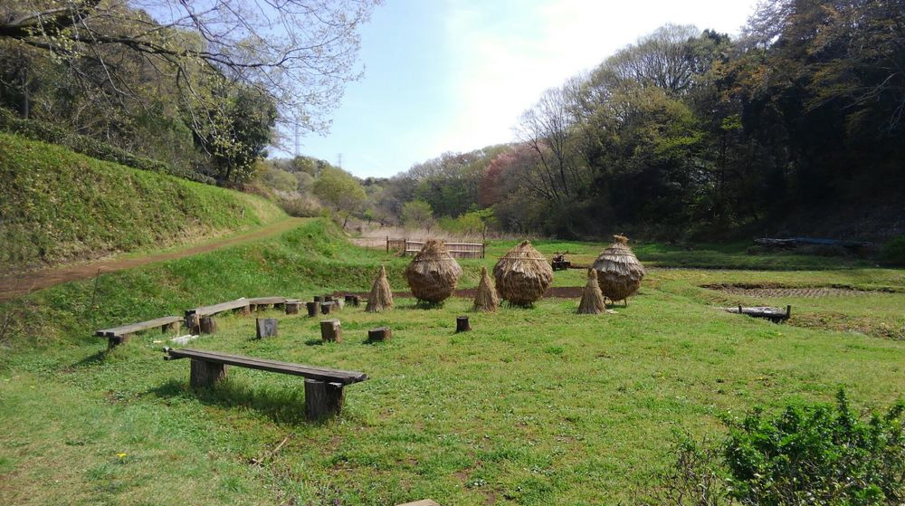
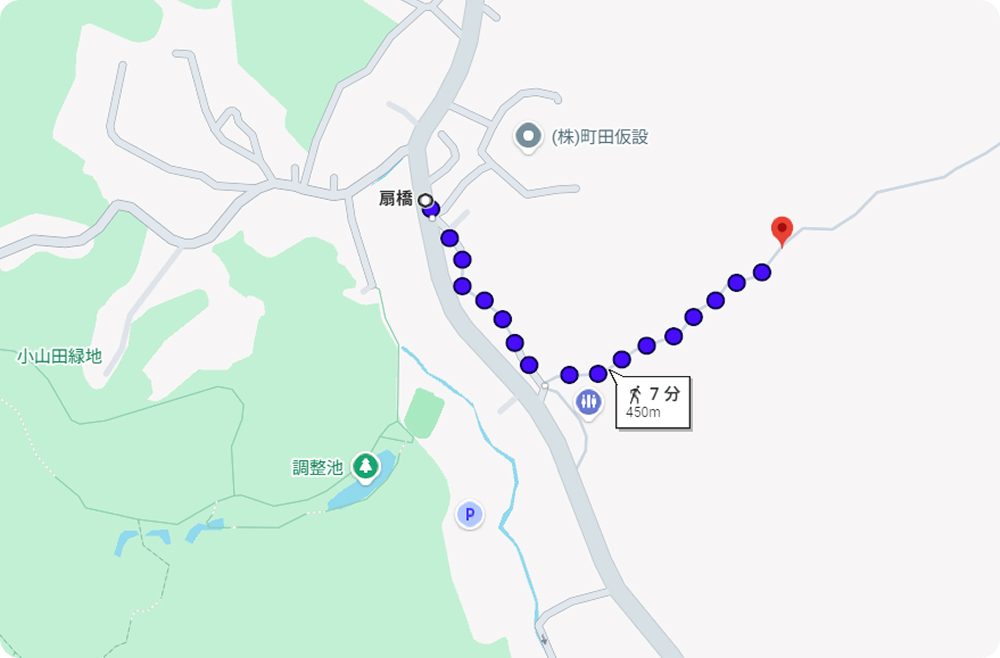
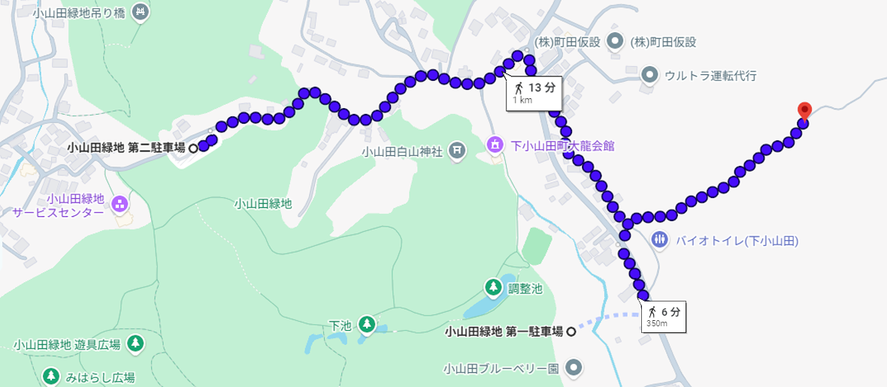

心地よい自然を感じられる里山風景で、気持ちが良いです。

Open
- 月: 9:00-16:00
- 金: 9:00-16:00
- 土: 9:00-16:00
- 日: 9:00-16:00
Closed
- 火
- 水
- 木
※雨天時は営業しておりません。HPをご確認ください。
SatoYama cafe
194-0203
町田市図師町里山6123
042-777-7777
ハイキングでお越しの場合
いくつかの拠点からアプローチ可能です。
ハイキングコースを確認公共交通機関でお越しの場合
乗車：小田急線町田駅西口町田バスセンター14番乗場（神奈中バス）（バスターミナルがございますがバスセンターをご利用ください）
「町31 多摩丘陵リハビリテーション病院行」
下車：「扇橋」
乗車：多摩センターバスターミナル11番乗場（京王バス）
「多45 日大三高行」
下車：「扇橋」
徒歩：10分ほどで到着します。

お車でお越しの場合
小山田緑地の第一駐車場もしくは第二駐車場をご利用ください。
徒歩：10分～15分ほどで到着します。
